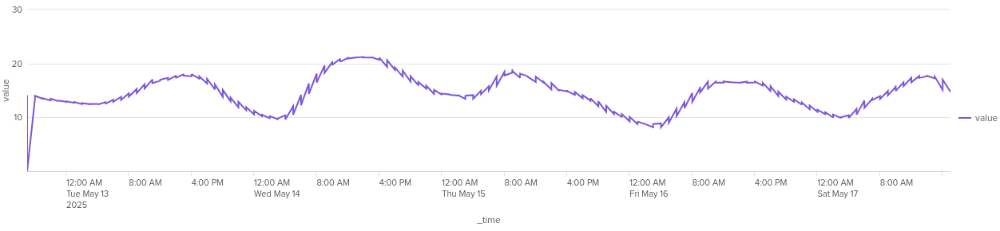
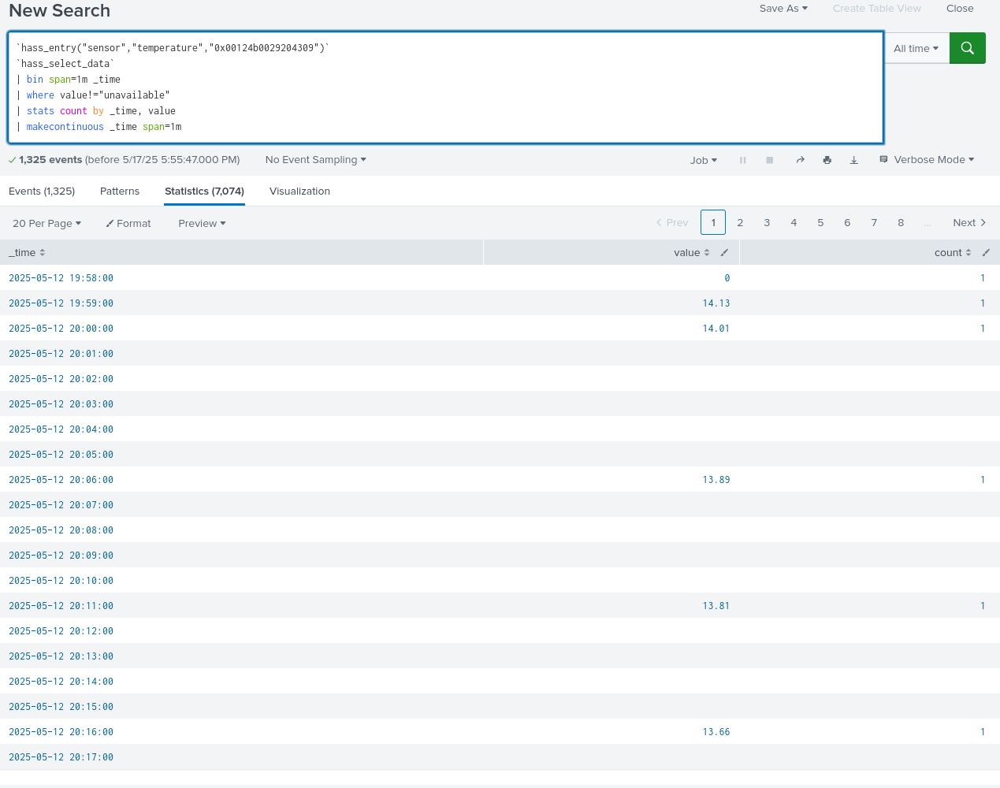
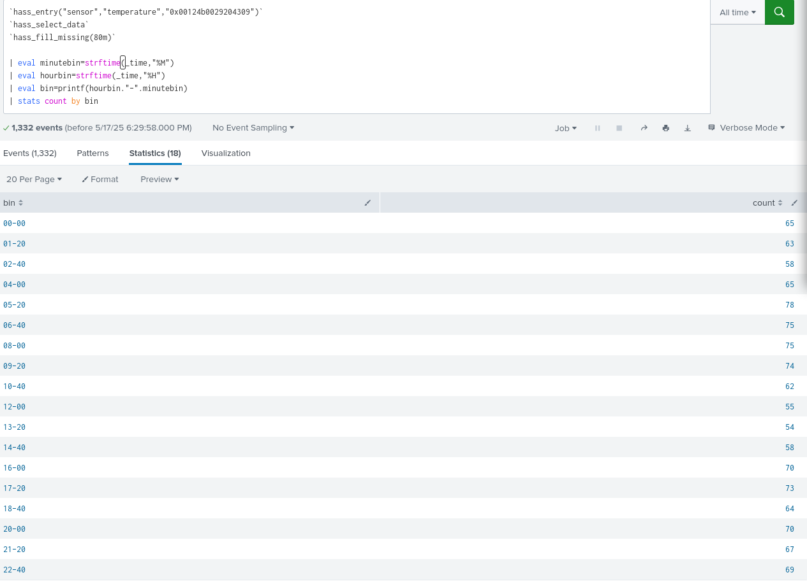
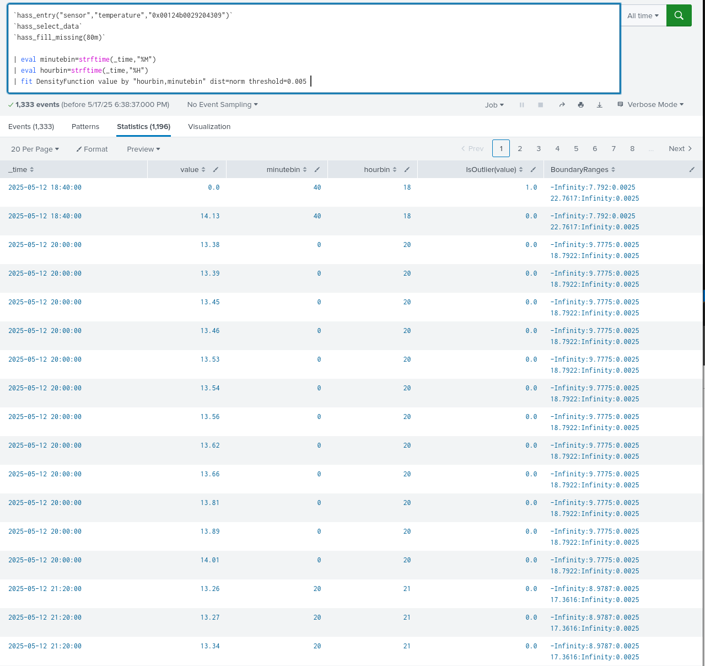

A probléma
flowchart TB; data["Adatok jellemzői"]; source["Forrás: hőmérők"]; cylic["Ciklikusság: nap-éj"]; trend["trend: növekvő, tavasz"]; goal["Anomáliák észlelése"]; data --> source; data --> cylic; data --> trend; data --> goal;
Előfeltélek
Folytonosság

flowchart LR; problem["Hiányzó értékek"]; cantuse["`Nem lehet null-okon matematikai műveleteket csinálni`"]; subgraph solutions["lehetséges megoldások"]; constant["konstans"]; prev_value["`előző/következő érték`"]; med_val["`valamilyen középérték`"]; interpol["`interpolációk - spline - lineáris`"]; end; problem --> cantuse; problem --> constant; problem --> prev_value; problem --> med_val; problem --> interpol;
Lehetséges megoldások
mindmap root(Ciklikus, idősoros adat) Alapvető SPL stats tstats streamstats Gyórsításos SPL Summary index data model + tsats lookup Extra megoldások Streaming statisztikai algoritmusok Machine learning - MLTK/DSDL
A fájl
Támogatott eloszlások
Elsőnek elemezzük ki ezt a részt:
graph LR A[DensityFunction Class] --> B[Initialization] B --> C[Parameter Handling] C --> D[Distribution Types] C --> E[Thresholds] D --> D1[AUTO] D --> D2[NORMAL] D --> D3[EXPONENTIAL] D --> D4[GAUSSIAN_KDE] D --> D5[BETA]
Most csak a normális eloszlással foglalkozunk.
codecs_manager.add_codec(
'algos_support.density_function.normal_distribution',
'NormalDistribution',
SimpleObjectCodec,
)
fit ág
graph LR A[DensityFunction Class] A --> F[Main Methods] F --> F1[fit] F1 --> G[Data Processing] G --> G1[Split by Groups] G --> G2[Fit Distribution] G --> G3[Validate Data]
def _fit_data(self, distribution, data, mlspl_limits):
"""Fit an instance of ProbabilityDistribution over data.
Warn if there are too few data points in the data array"""
min_data_size = int(mlspl_limits.get('min_data_size_to_fit', 50))
if len(data) < min_data_size and not self._warned_on_few_training_data:
self._warned_on_few_training_data = True
self._warn_on_few_training_data()
# To fix the error of object not having "_exclude_dist" attribute, when partial_fit is used on a smaller dataset and with an earlier version of MLTK (<=5.3.0)
self._exclude_dist = self._exclude_dist if hasattr(self, '_exclude_dist') else None
distribution.fit(data.values, self._metric, self._exclude_dist)
self._warn_on_dist_name_mismatches_threshold(distribution.get_name(), self._threshold)
self._distance = distribution.distance
FIT ág következtetései
flowchart LR;
code_min{"`min 50`"};
imp_min["Egy csoportban legalább 50"];
imp_min2["80m"];
code_min --> imp_min;
imp_min --> imp_min2;

